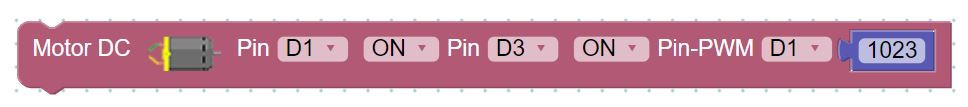
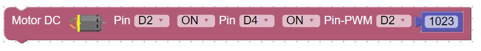
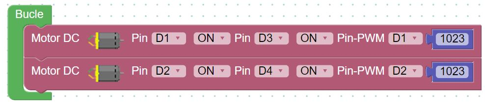

MOTORES
Los motores derechos se gobiernan con la siguiente instrucción :

- Activando el pin D1 encendemos los motores
- El pin D3 en ON van hacia delante, si queremos que vayan hacia atrás, ponemos D3 en OFF
- El valor PWM del pin D1 es la potencia que transferimos al motor, puede ser desde 0 hasta 1023
Recomendamos leer esta página sobre el significado de las salidas PWM.
Para los motores izquierdos se gobiernan con la siguiente instrucción :

- Activando el pin D2 encendemos los motores
- El pin D4 en ON van hacia delante, si queremos que vayan hacia atrás, ponemos D4 en OFF
- El valor PWM del pin D2 es la potencia que transferimos al motor, puede ser desde 0 hasta 1023.
Recomendamos ejecutar estas instrucciones y jugar con estos valores para ver si están bien conectados los motores :


Rover Arduino por Ver créditos bajo licencia Creative Commons Reconocimiento-NoComercial-CompartirIgual 4.0 Internacional License.